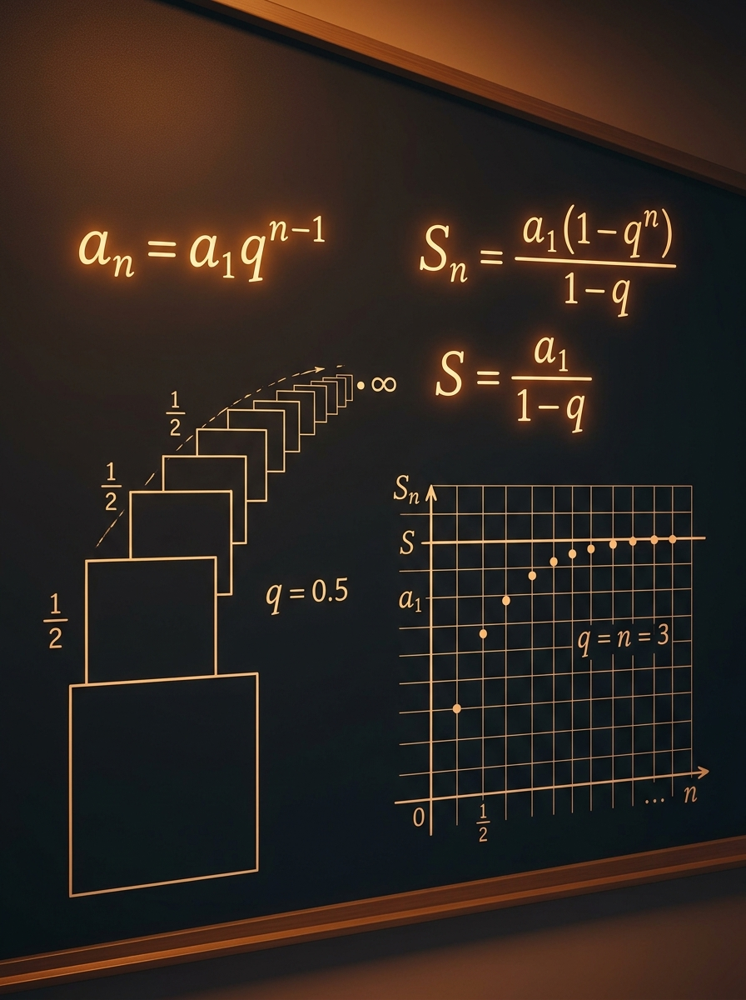

Šta ćeš naučiti
Kako da iz teksta zadatka izvučeš \(a_1\), \(q\), \(a_n\), \(S_n\) i po potrebi \(S_\infty\).
Kada se svaki sledeći član dobija množenjem istim brojem, ulaziš u svet geometrijskog niza. Ova lekcija te vodi od osnovne ideje količnika \(q\), preko opšteg člana i sume prvih \(n\) članova, do prvog ozbiljnog susreta sa beskonačnim sabiranjem koje ipak daje konačan rezultat.
Kako da iz teksta zadatka izvučeš \(a_1\), \(q\), \(a_n\), \(S_n\) i po potrebi \(S_\infty\).
Mešanje sume prvih \(n\) članova sa beskonačnom sumom i zaboravljanje da za \(S_\infty\) mora važiti \( |q|<1 \).
Zadaci sa tri broja u progresiji, određivanje parametara niza i sabiranje beskonačno mnogo površina.

Geometrijski niz nije samo “još jedna progresija”. On te uvodi u razmišljanje koje je srce matematičke analize: promena više nije ista u apsolutnom smislu, nego se meri faktorom, a parcijalne sume mogu da se približavaju granici. To je veliki misaoni skok između srednjoškolske algebre i ozbiljnije univerzitetske matematike.
Geometrijski niz je osnova za razumevanje eksponencijalnog rasta i opadanja. Isti model stoji iza kamate, radioaktivnog raspada, prigušenja signala i mnogih modela iz fizike i ekonomije.
Prijemni ne proverava samo da li znaš formulu napamet. Proverava da li umeš da prepoznaš multiplikativni obrazac i da li razlikuješ tri tipa pitanja:
Zato što članovi često postaju sve manji po istom faktoru. Kada taj faktor po apsolutnoj vrednosti ostaje manji od 1, parcijalne sume se približavaju granici i beskonačno sabiranje dobija smisao.
Najjednostavnije rečeno, u geometrijskom nizu svaki sledeći član dobijaš tako što prethodni član pomnožiš istim brojem \(q\). Taj broj zove se količnik ili kvocijent niza.
Ako je prvi član \(a_1\), onda važi:
To možeš sažeto zapisati kao:
Kada su susedni članovi nenula, količnik čitaš kao:
Pedagoški važno: nemoj se vezivati samo za razlomak \( \frac{a_{n+1}}{a_n} \). Opšti oblik \(a_n=a_1q^{n-1}\) ostaje validan i za \(q=0\).
Ako više puta primenjuješ pravilo množenja sa \(q\), dobijaš:
Zato za \(n\)-ti član važi ključna formula:
Ova formula je glavno oruđe kada treba da nađeš konkretan član, da porediš dva člana ili da iz poznatih članova izračunaš nepoznat \(q\) i \(a_1\).
Ovde je \(q=2\), jer svaki član dobijaš udvostručavanjem prethodnog.
Ovde je \(q=\frac{1}{3}\), pa se članovi smanjuju, ali ne prelaze u negativne vrednosti.
Količnik je \(q=-\frac12\). Znak se smenjuje, a apsolutne vrednosti idu ka nuli.
U aritmetičkom nizu proveravaš da li je razlika između susednih članova stalna. U geometrijskom proveravaš da li je odnos susednih članova stalan, odnosno da li svaki član nastaje množenjem prethodnog istim faktorom.
Jedna od najvažnijih prijemnih veština je da ne računaš naslepo. Pre nego što kreneš u formulu, pogledaj vrednost \(q\). Ona ti daje intuiciju o tome šta treba da očekuješ od članova i od suma.
Za tri uzastopna člana geometrijskog niza važi lepa osobina:
To znači da je srednji član geometrijska sredina svojih suseda. Upravo ova ideja rešava mnoge zadatke tipa: “nađi broj \(x\) tako da tri izraza čine geometrijski niz”.
kada su \(a,b,c\) tri uzastopna člana geometrijskog niza. Ovu formulu koristiš brzo, ali tek pošto si siguran da su članovi zaista uzastopni i pravilno poređani.
Brojevi se smanjuju: \(27,9,3,1,\frac13,\dots\). Ovakav niz je odličan kandidat za beskonačnu sumu.
Niz \(8,-4,2,-1,\dots\) osciluje po znaku, ali amplituda opada. Zato beskonačni red ipak može da konvergira.
Ako su \(x-1\), \(x+2\), \(x+8\) uzastopni članovi, pišeš \((x+2)^2=(x-1)(x+8)\).
Može, ali samo ako je \( |q|<1 \). Tada se znakovi smenjuju, ali apsolutne vrednosti članova opadaju ka nuli, pa parcijalne sume ipak imaju granicu.
Nemoj učiti formulu za sumu kao izolovan zapis. Kada razumeš njeno izvođenje, mnogo ređe ćeš pomešati znakove ili zaboraviti poseban slučaj \(q=1\).
Za geometrijski niz sa prvim članom \(a_1\) i količnikom \(q\) suma prvih \(n\) članova je:
Pomnoži celu jednačinu sa \(q\):
Sada oduzmi drugu jednakost od prve. Većina članova se poništi:
Za \(q\neq1\) dobijaš:
Kada je \(q=1\), svi članovi su jednaki \(a_1\), pa formula sa deljenjem kroz \(1-q\) nije dozvoljena. Zato ovaj slučaj izdvajaš posebno:
Ovo je tipična ispitna zamka: učenik mehanički primeni opštu formulu, dobije deljenje nulom i izgubi lake bodove.
\(S_4=3(1-2^4)/(1-2)=45\). To je isto što i \(3+6+12+24\).
\(S_5=16\cdot \frac{1-(1/2)^5}{1-1/2}=31\). Ovakvi brojevi su bliski beskonačnoj sumi 32.
Svi članovi su 7, pa je \(S_{10}=10\cdot7=70\). Nema potrebe za opštom formulom.
Zato što se tada gotovo svi članovi poravnaju i ponište pri oduzimanju. Ostaju samo prvi član \(a_1\) i poslednji pomereni član \(a_1q^n\), pa se formula dobija veoma čisto.
Ovde se prvi put javlja ideja da beskonačno mnogo članova može dati konačan zbir. To nije magija. To je posledica činjenice da novi članovi postaju sve manji tako brzo da njihov ukupan doprinos ima granicu.
Već znaš da za \(q\neq1\) važi:
Ako je \( |q|<1 \), tada:
Pa parcijalne sume imaju granicu:
Ovo je formula za beskonačni geometrijski red. Ali ona važi samo pod uslovom \( |q|<1 \).
Ovde je \(a_1=12\), \(q=\frac12\), pa je \(S=\frac{12}{1-1/2}=24\).
\(q=-\frac12\), pa red konvergira i važi \(S=\frac{8}{1+1/2}=\frac{16}{3}\).
Ako svaka naredna površina iznosi četvrtinu prethodne, dobijaš beskonačni geometrijski red sa \(q=\frac14\).
Ne može. Ako sami članovi ne idu ka nuli, parcijalne sume ne mogu da se stabilizuju. Zato je uslov \(a_n\to0\) nužan, a kod geometrijskog niza to znači upravo \( |q|<1 \) kada je \(a_1\neq0\).
Gore vidiš prvih \(n\) članova kao stubiće, a dole graf parcijalnih suma \(S_1,S_2,\dots,S_n\). Najvažnije je da povežeš dve slike: kako se ponašaju sami članovi i šta to znači za ukupnu sumu.
Posmatraj da li parcijalne sume prilaze stabilnoj visini ili se udaljavaju od nje.
Ako je \( |q|<1 \), iscrtava se i isprekidana linija beskonačne sume. Kada je \(q\) negativan, stubići menjaju smer, a linija suma osciluje.
U primerima ispod ideš od osnovnog prepoznavanja geometrijskog niza do tipičnih prijemnih zadataka u kojima je progresija “sakrivena” u tekstu. Obrati pažnju ne samo na račun, nego i na izbor metode.
Dat je geometrijski niz \(3,6,12,\dots\). Nađi opšti član i izračunaj \(a_6\).
Ovde je \(a_1=3\), a količnik dobijaš iz odnosa susednih članova:
Zaključak: kada su \(a_1\) i \(q\) jasni, ceo niz je praktično određen jednom formulom.
U geometrijskom nizu važi \(a_2=6\) i \(a_5=48\). Odredi \(a_1\) i \(q\).
Zaključak: kada znaš dva člana, podela jednačina je često najbrži način da izdvojiš količnik.
Nađi tri pozitivna broja u geometrijskoj progresiji ako im je zbir 14, a proizvod 64.
Za tri uzastopna člana geometrijskog niza zgodno je pisati:
Oba rešenja daju iste brojeve samo obrnutim redosledom, pa su traženi brojevi:
Zaključak: kod tri broja u GP simetričan zapis često štedi vreme i čuva račun pod kontrolom.
Za geometrijski niz sa \(a_1=16\) i \(q=\frac12\) izračunaj \(S_5\).
Traži se zbir prvih pet članova, dakle koristiš formulu za \(S_n\), ne opšti član.
Zaključak: broj 31 je vrlo blizu beskonačnoj sumi 32, pa već vidiš kako konačna suma “prilazi” granici.
Površina prvog trougla je \(27 \, \text{cm}^2\), a svaka naredna površina jednaka je četvrtini prethodne. Odredi zbir površina svih trouglova.
Površine su:
Pa su \(a_1=27\) i \(q=\frac14\).
Uslov je ispunjen, pa beskonačna suma postoji.
Zaključak: beskonačno mnogo trouglova zajedno zauzima konačnu ukupnu površinu od \(36 \, \text{cm}^2\).
Formule nisu odvojene od značenja. Svaka ima svoju prirodnu situaciju i tipičnu zamku, zato ih uči zajedno sa kontekstom u kome se pojavljuju.
Koristiš ga kada prepoznaješ obrazac “svaki sledeći član dobija se množenjem prethodnog”.
Glavna formula za traženje konkretnog člana i za poređenje članova sa različitim indeksima.
Najsigurniji oblik formule ako želiš da prirodno pređeš na beskonačnu sumu.
Ne zaboravi da opšta formula tada nije dozvoljena zbog deljenja nulom.
Prva stvar koju proveravaš pre bilo kakvog računanja beskonačne sume.
Brza formula za zadatke u kojima tri izraza treba da čine geometrijski niz.
Većina grešaka u ovoj lekciji ne dolazi iz teških računa, nego iz mešanja pojmova. Zato ih vredi prepoznati unapred.
Učenik vidi pravilnost, ali ne proveri da li je stalna razlika ili stalni odnos. To vodi do potpuno pogrešne formule već u prvom koraku.
Formula \(S=\frac{a_1}{1-q}\) ne važi uvek. Bez provere uslova \( |q|<1 \) rezultat je formalno lep, ali matematički netačan.
Kod sume prvih \(n\) članova moraš odvojiti \(q=1\), jer opšta formula tada deli nulom.
Negativan količnik znači da se znakovi smenjuju. Ako to zanemariš, dobiješ pogrešne članove i pogrešne parcijalne sume.
Na prijemnom zadatak retko kaže direktno: “ovo je geometrijski niz”. Češće ćeš dobiti opis odnosa, tri broja, parametar ili geometrijsku konstrukciju. Zato ti treba rutinski način prepoznavanja.
Najčešće deliš jednačine da eliminišeš \(a_1\), pa potom vraćaš u jednostavniji izraz.
Ovde radi formula \(b^2=ac\) ili simetričan zapis \(\frac{a}{q},a,aq\). Zadaci se često povezuju sa sistemima jednačina.
Traži se zbir prvih \(n\) članova. Najbitnije je da pravilno odabereš formulu i ne zaboraviš slučaj \(q=1\).
U geometrijskim zadacima prepoznaješ da se svaka nova veličina dobija istim faktorom od prethodne, pa problem prelazi u beskonačni geometrijski red.
Reši zadatke samostalno, pa tek onda otvori rešenja. Cilj je da naučiš da sam prepoznaš tip problema i izabereš pravu formulu.
Za geometrijski niz sa \(a_1=5\) i \(q=3\) izračunaj \(a_4\).
U geometrijskom nizu važi \(a_3=12\) i \(a_6=96\). Odredi \(a_1\) i \(q\).
Nađi \(x\) tako da brojevi \(x-1\), \(x+2\), \(x+8\) budu uzastopni članovi geometrijskog niza.
Izračunaj \(S_6\) za \(a_1=4\) i \(q=\frac12\).
Površina prvog trougla je \(40 \, \text{cm}^2\), a svaka naredna jednaka je petini prethodne. Odredi zbir svih površina.
Da li red \(7-14+28-56+\dots\) ima beskonačnu sumu?
Ovde je \(a_1=7\) i \(q=-2\). Pošto je \( |q|=2>1 \), članovi ne teže nuli i red nema beskonačnu sumu.
Ne uči ovu lekciju kao tri nepovezane formule. Opšti član, suma prvih \(n\) članova i beskonačna suma nastaju iz iste ideje: svaki novi korak menja prethodni rezultat istim faktorom \(q\). Kada to razumeš, formule se ne pamte mehanički, nego postaju prirodna posledica jedne slike.
Geometrijski niz prepoznaješ po stalnom količniku \(q\), ne po stalnoj razlici.
Za prvi član \(a_1\) i količnik \(q\) važi \(a_n=a_1q^{n-1}\).
Za \(q\neq1\) koristiš \(S_n=\frac{a_1(1-q^n)}{1-q}\), a za \(q=1\) važi \(S_n=na_1\).
Formula \(S=\frac{a_1}{1-q}\) važi samo ako je \( |q|<1 \).